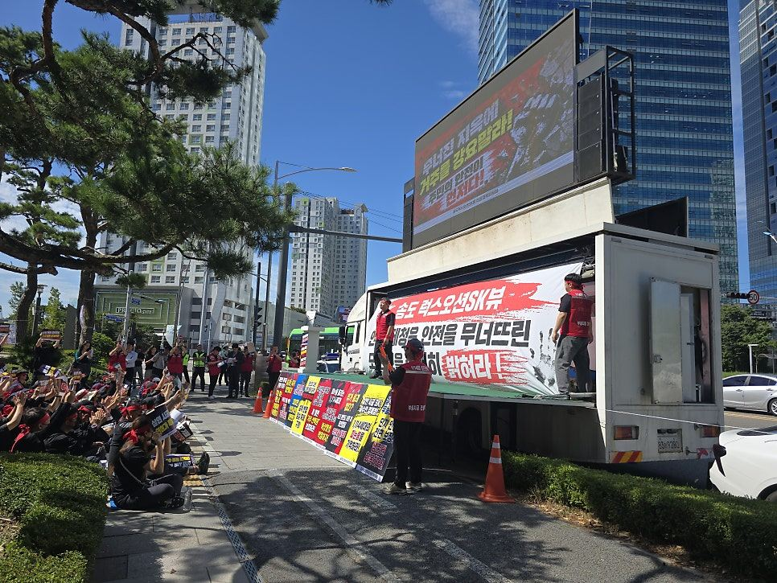
당신의 목소리가
가장 멀리, 가장 선명하게
대형 LED 화면과 확성 장비를 갖춘 시위 트럭. 1인 시위부터 대형 집회, 팬덤 트럭까지 주차할 공간만 있으면 바로 시작합니다.
이런 분들이 이용합니다
개인도, 단체도 누구나 빌릴 수 있습니다. 원하는 영상과 메시지를 별도 제약 없이 송출합니다.
1인 · 소규모 시위
사람을 모으기 어려울 때, 차량 한 대가 메시지를 대신 전합니다
대형 집회
멀리 있는 참여자도 한눈에 보이는 대형 화면과 무대·음향
K-POP 팬덤 트럭
기획사 사옥 앞 메시지·응원 트럭, 국내외 팬 누구나
스포츠 팬
구단 앞 팬들의 의견 전달, 응원 메시지
노동조합 · 단체
노동자·자영업자 생존권 집회, 정책 캠페인
무인 시위
지정 장소에 배치 후 비대면으로 안전하게 메시지 송출
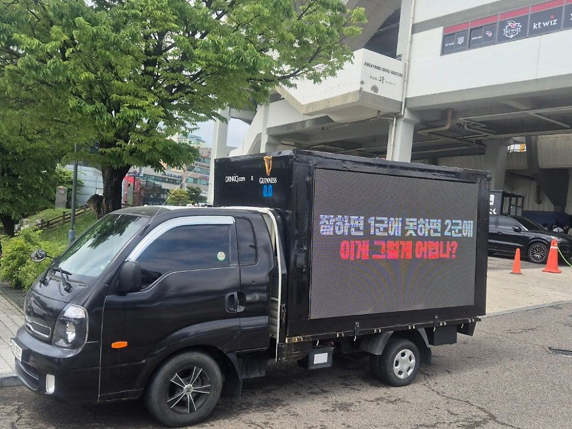
주차만 하면
바로 시작합니다
- LED 전광판 + 확성 장비 + 마이크 모두 차량에 탑재
- 자체 발전기로 전기 연결 불필요
- USB · 유튜브 · 생방송으로 자유롭게 영상 송출
- 도심 · 상가 · 기업 앞 · 관공서 인근 등 어디든
- 시위용으로는 주정차가 쉬운 1톤(1.5톤)이 가장 인기
- 인도·차도 양쪽으로 보이는 양면형도 가능
규모에 맞게 고르세요
100인치 화면. 콤팩트해서 주차장·골목 정차가 쉽습니다. 무인 운영에 적합합니다.
120인치 화면. 전광판이 위로 올라가는 슬라이드형으로 무대 연설까지 가능합니다.
300인치 초대형 화면과 마이크 10개, 24채널 믹서. 큰 광장에서도 모두가 봅니다.
LED 시위차 배차 현장
사진을 누르면 크게 볼 수 있습니다.
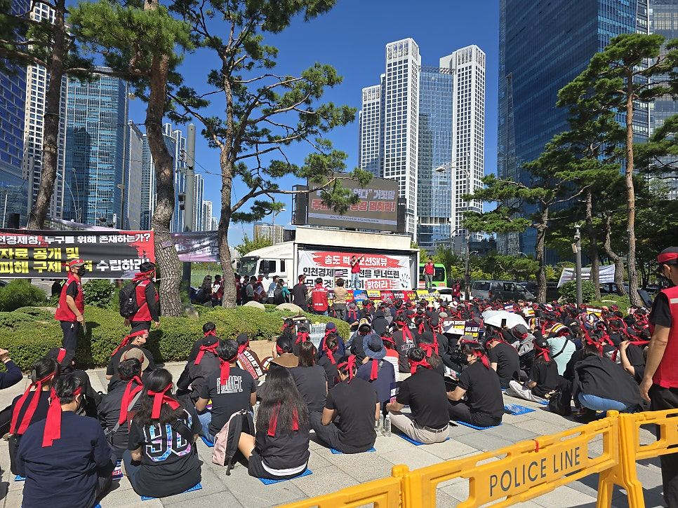
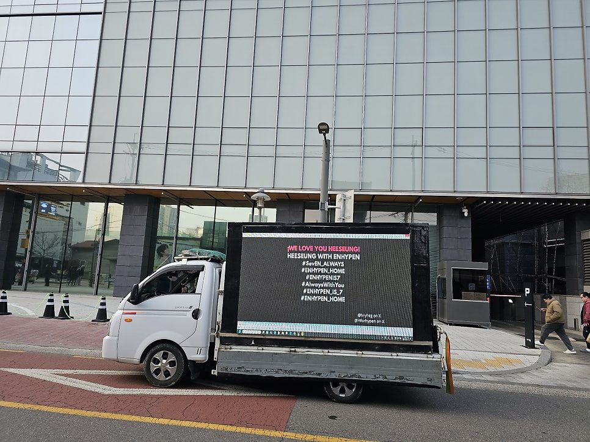
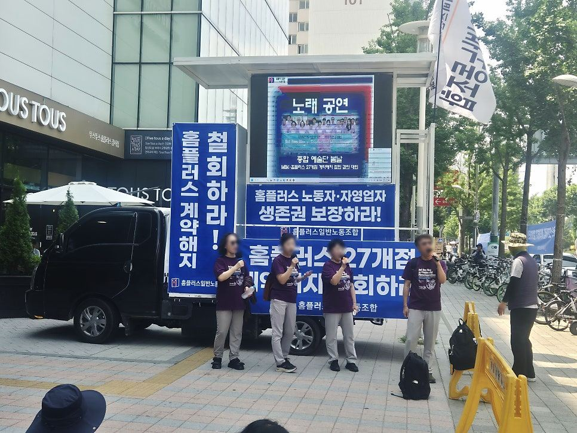
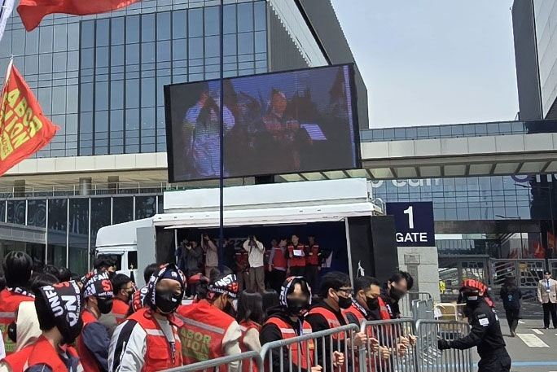
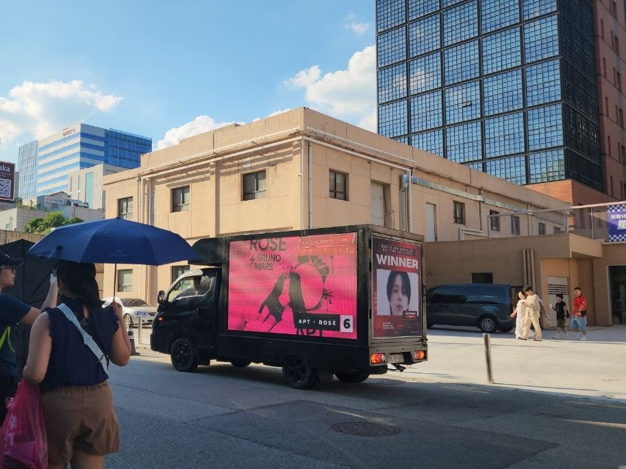
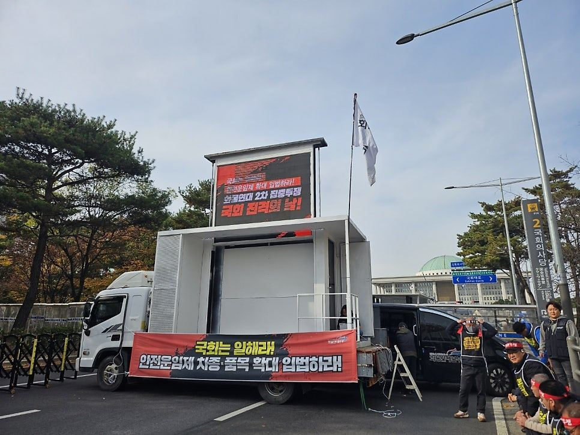
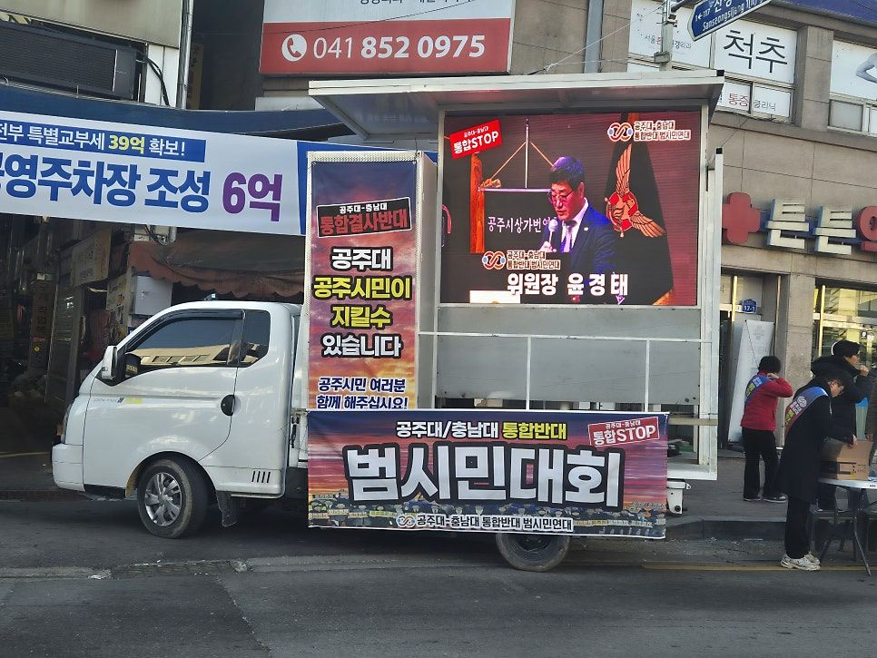
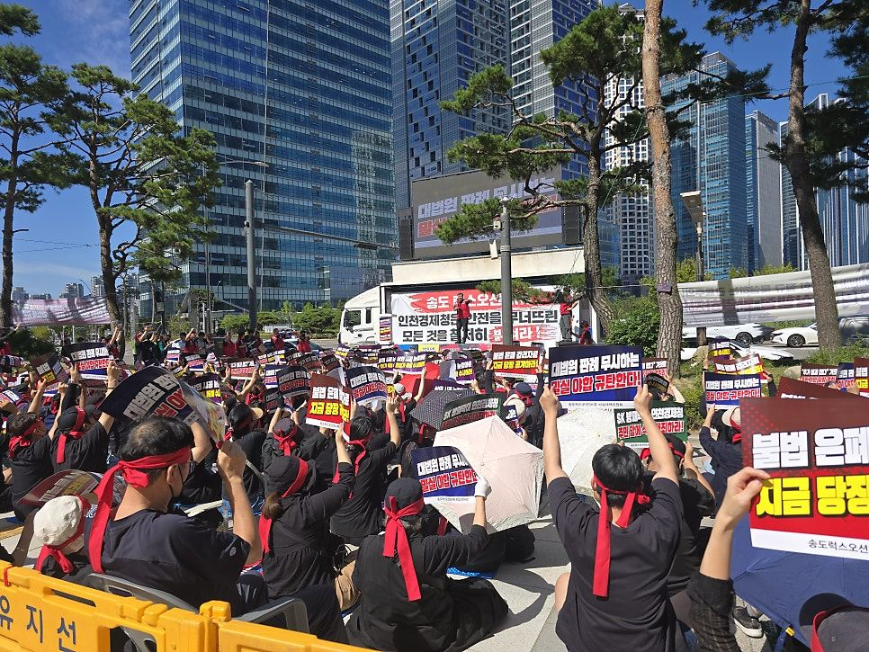
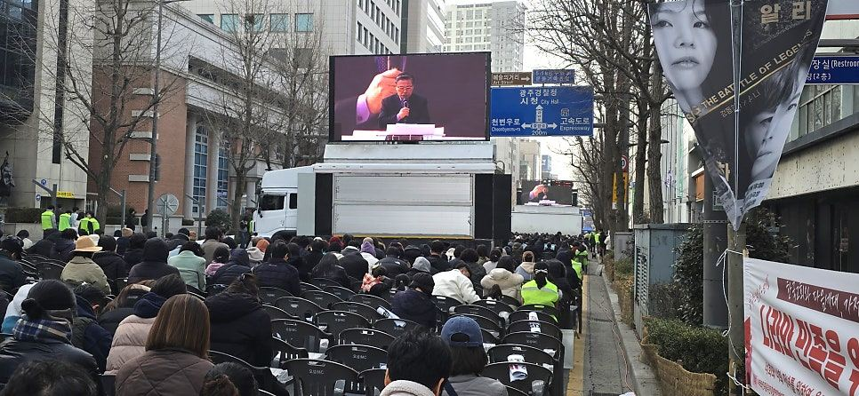
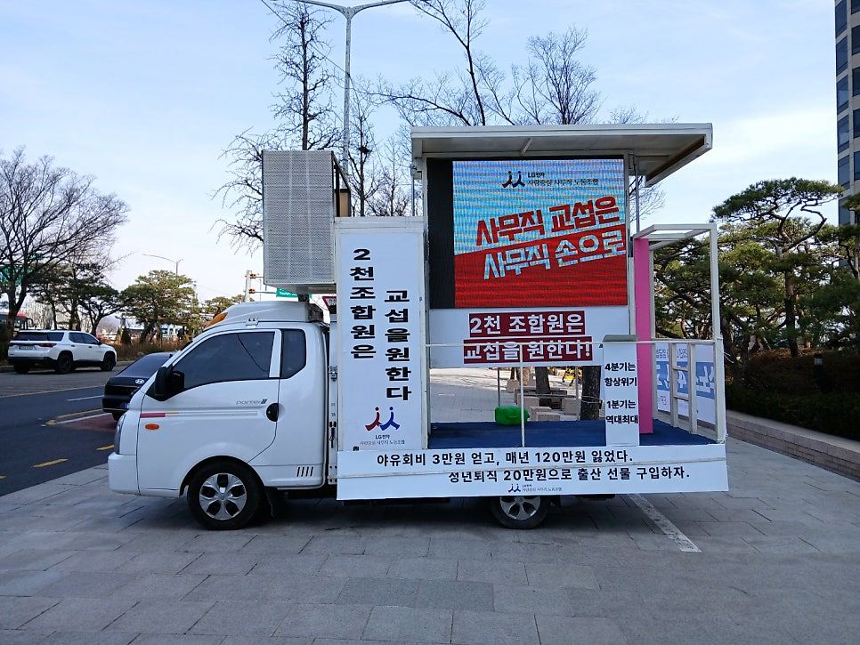
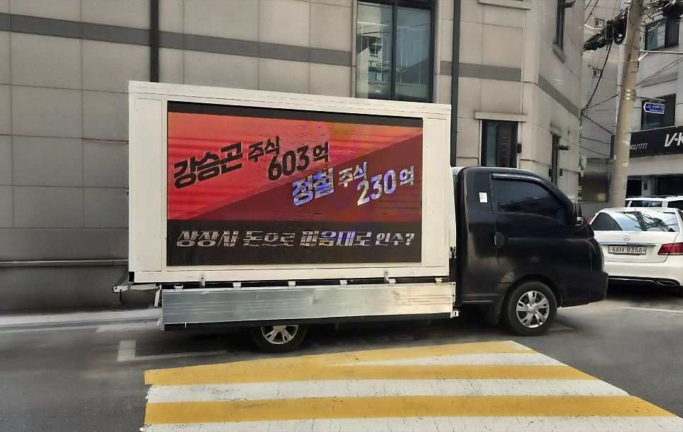
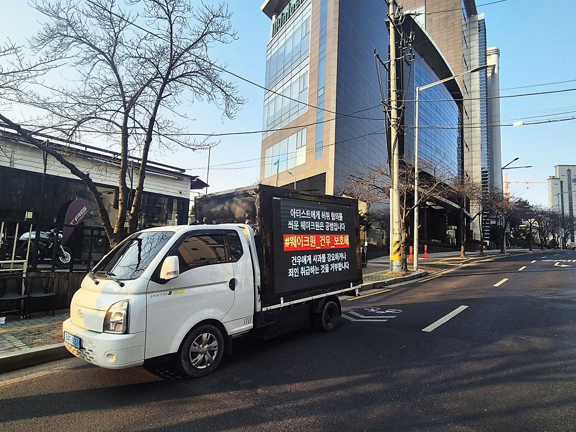
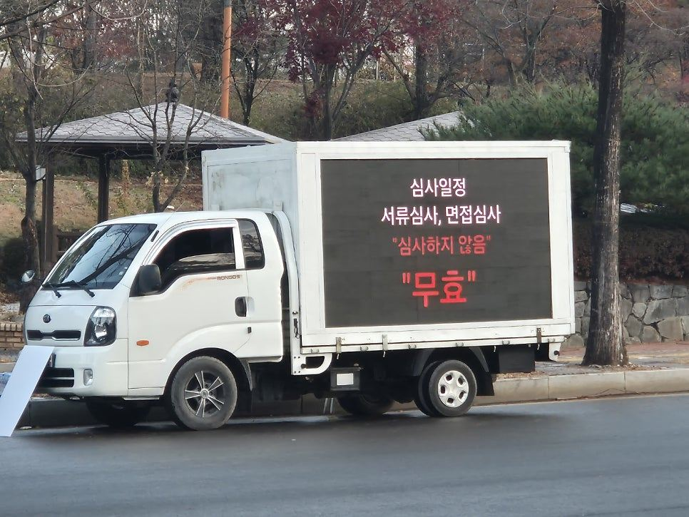
LED 시위차 자주 묻는 질문
개인도 빌릴 수 있나요?
네, 개인·단체 누구나 이용할 수 있습니다. 국내는 물론 해외에 있는 팬들도 전화 한 통으로 이용하실 수 있습니다.
비용에 무엇이 포함되나요?
기본 1일 6시간 기준이며, 기사 출장비와 차량 유류비가 모두 포함된 견적이라 추가 비용이 없습니다. 공장 직영으로 중간 마진 없이 투명하게 안내합니다.
며칠 또는 몇 달 동안도 되나요?
단 하루 집회부터 수개월간의 장기 전국 순회 시위까지 가능합니다. 이동 동선과 기간에 맞춰 가장 효율적인 견적을 드립니다.
집회 신고는 직접 해야 하나요?
집회·시위 신고는 주최하시는 분이 관할 경찰서에 진행해 주셔야 합니다. 차량 배치 위치와 운영 시간은 상담 시 함께 조율합니다.
현수막도 붙일 수 있나요?
네. 차량 규격에 맞는 현수막·래핑을 제작해 드리고, 직접 준비하셔도 됩니다. 규격은 상담 시 안내합니다.